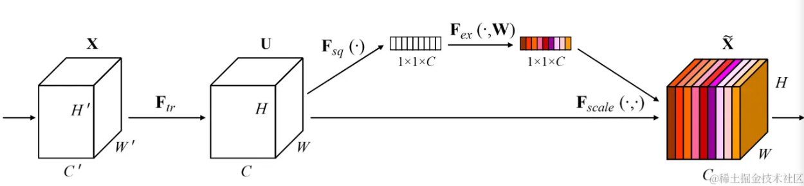
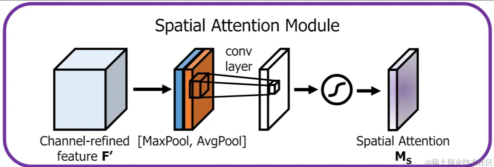
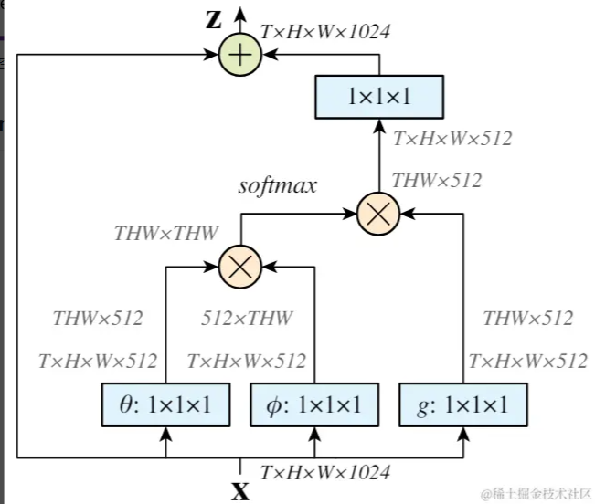
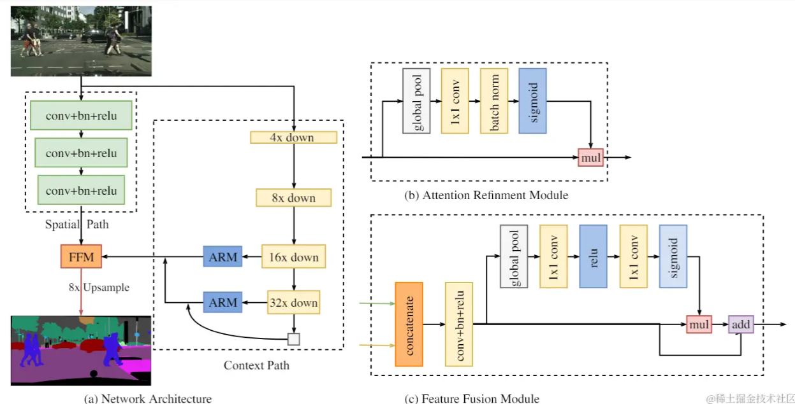
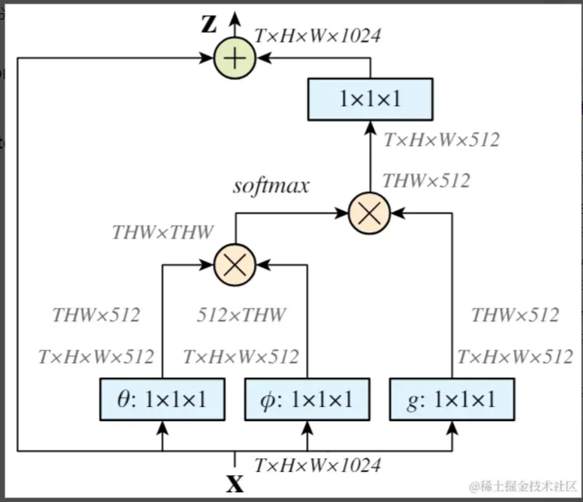
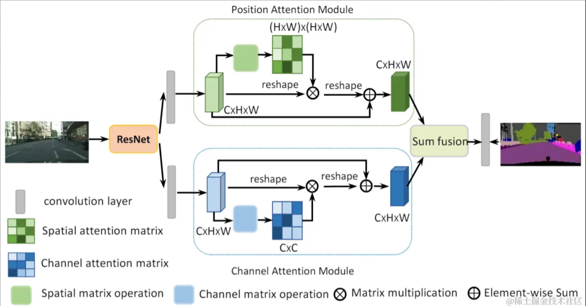
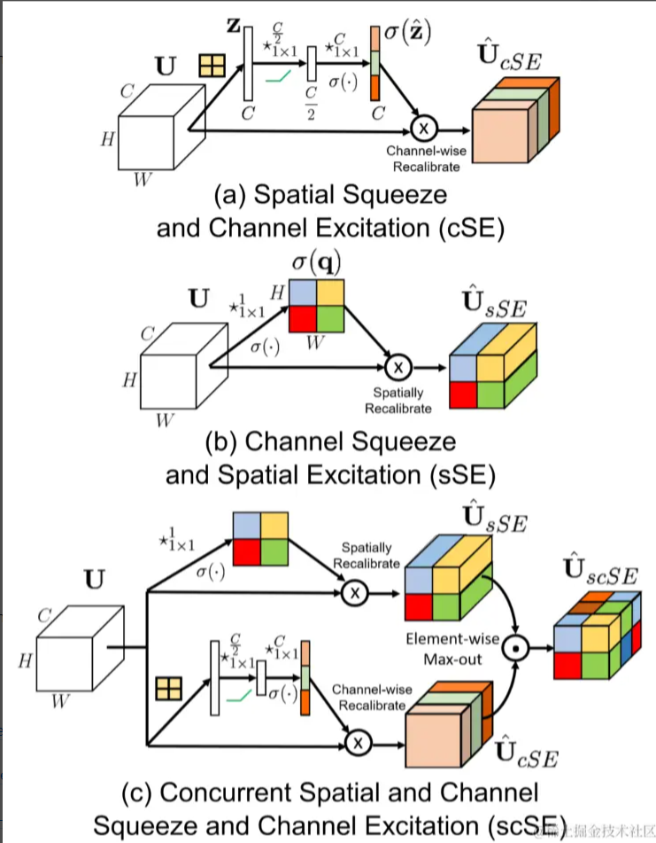

一、背景
注意力机制可有效提高模型对特征的提取能力，进而提高模型精度。本文首先对经典的三种注意力学习方法进行介绍，后结合自己一点点浅薄认知，对注意力机制后续的改进方向进行归纳，希望对大家能有帮助
二、前置知识
2.1 通道注意力
 对特征图进行全局平均池化，后经过两层全连接层，最后使用Sigmoid输出0-1之间的权重2.2 空间注意力
 将特征图进行压缩，得到空间方向上的权重图2.3 self-attention
这里借助了Non-local Neural Networks中的一张图。self-attention本质上是一种空间注意机制，如上图所示，需要求解一个[THW, THW]的矩阵，该矩阵中的每一行，表示原特征图中的一点与其余点的关系
三、各种改进版本
将改进的注意力机制主要分为四类
- 跨特征：构建不同的特征表达，后进行融合
- 分组：对特征图按通道分组后，再使用注意力机制
- self-attention：本质上，self-attention就是一系列矩阵运算，对运算过程中的某些步骤进行优化
- 空间+通道：很自然的想法，同时使用两种注意力机制
3.1 跨特征
3.1.1 BiSeNet
 对不同层次的特征使用通道注意力机制进行融合。这应该属于应用创新，没有构建新的注意力机制，而是将老的注意力机制应用到特征融合方向3.1.2 SKNet

使用不同感受野卷积核构建多分支特征，将这些特征 add 后计算不同分支的同道注意力系数，后沿着通道方向进行加权求和
3.2 分组
3.2.1 SGNet

对每个组，先计算向量x的平均值（全局平均池化），后将利用该向量对特征图沿着通道 方向加权求和得到 空间注意力，再归一化，后经sigmoid函数输出
3.2.2 SANet

将特征沿着通道分组，对每一组，再分成 空间注意力 和 通道注意力。对空间注意力，使用Group normalization实现。将分组结果进行拼接，后使用类似ShufflfleNet v2的方法进行channel shuffle
3.3 Self Attention
3.3.1 non local attention
定义了不同形式计算向量相似性的函数，提出self attention是non local attention 的特例
3.3.2 GCNet

指出non local attention不同位置的attention map基本一致，只计算Cx1x1的特征图
3.3.3 dual attention
并联non local attention 和 GCnet
3.4 空间+通道
3.4.1 BAM

并联，attention map先相加（利用了广播机制），后与原特征图相乘
3.4.2 scSE
并联，attention map先各自相乘，后取最大值得到最终输出
参考文献
[1] BiSeNet: Bilateral Segmentation Network for Real-time Semantic Segmentation
[3] Spatial Group-wise Enhance: Improving Semantic Feature Learning in Convolutional Networks
[4] SA-NET: SHUFFLE ATTENTION FOR DEEP CONVOLUTIONAL NEURAL NETWORKS
[6] GCNet: Non-local Networks Meet Squeeze-Excitation Networks and Beyond
[7] Dual Attention Network for Scene Segmentation